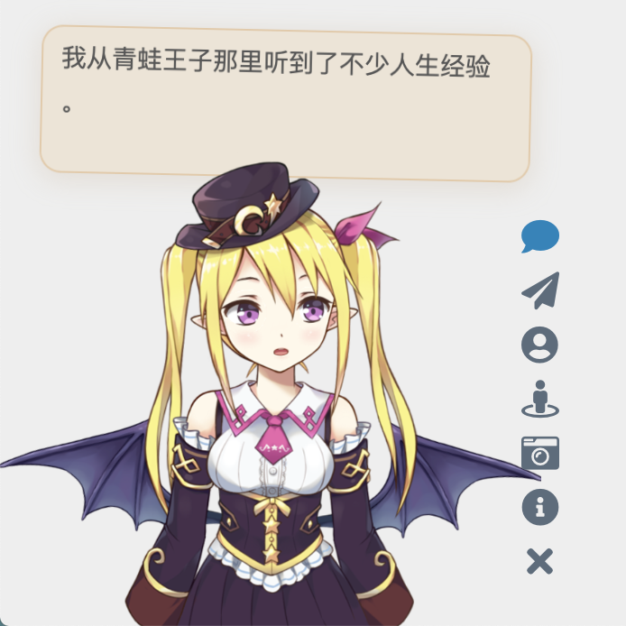
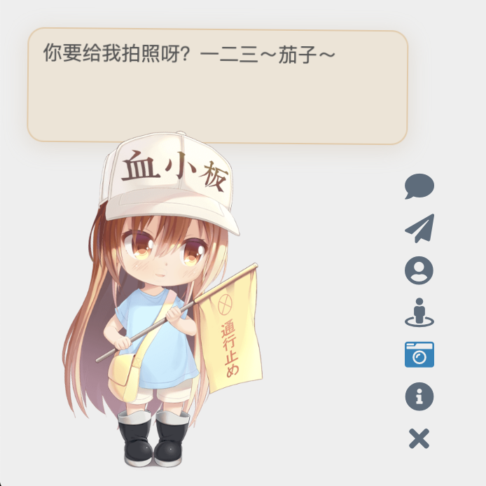

Live2D Widget


Features
Add Live2D widget to web page. Compatible with PJAX.

(Note: The character models above are for demonstration purposes only and are not included in this repository.)
You can also check out example web pages:
- Check the effect in the lower left corner of Mimi’s Blog
- demo.html to demonstrate basic functionality
- login.html to imitate the login interface of NPM
Usage
If you are a beginner or only need the basic functionality, you can simply add the following line of code to the head or body of your HTML page to load the widget:
1 | <script src="https://fastly.jsdelivr.net/gh/stevenjoezhang/live2d-widget@latest/autoload.js"></script> |
The placement of the code depends on how your website is built. For example, if you are using Hexo, you need to add the above code to the template file of your theme. The modification process is similar for pages generated using various template engines.
If your website uses PJAX, since the widget does not need to be refreshed on every page, make sure to place the script outside the PJAX refresh area.
However, we strongly recommend configuring the widget yourself to make it more suitable for your website!
If you are interested in customizing the widget, please refer to the detailed instructions below.
Configuration
You can refer to the source code of autoload.js to see the available configuration options. autoload.js will automatically load three files: waifu.css, live2d.min.js, and waifu-tips.js. waifu-tips.js creates the initWidget function, which is the main function for loading the widget. The initWidget function accepts an object-type parameter as the configuration for the widget. The following are the available options:
| Option | Type | Default Value | Description |
|---|---|---|---|
waifuPath |
string |
https://fastly.jsdelivr.net/gh/stevenjoezhang/live2d-widget@latest/waifu-tips.json |
Path to the widget resources, can be modified |
apiPath |
string |
https://live2d.fghrsh.net/api/ |
API path, optional |
cdnPath |
string |
https://fastly.jsdelivr.net/gh/fghrsh/live2d_api/ |
CDN path, optional |
tools |
string[] |
see autoload.js |
Buttons of the loaded tools, optional |
Among them, the parameters apiPath and cdnPath only need to set one of them. apiPath is the URL of the backend API, which can be set up and modified by yourself (there are many things to modify, not discussed here). You can refer to live2d_api for more information. On the other hand, cdnPath is used to load resources through CDN services like jsDelivr, which provides better stability.
Customization
If the options provided in the “Configuration” section above are not enough to meet your needs, you can make modifications yourself. The directory structure of this repository is as follows:
src/waifu-tips.jscontains the logic for the button and dialog box.waifu-tips.jsis automatically generated bysrc/waifu-tips.jsand it is not recommended to modify it directly.waifu-tips.jsondefines the triggering conditions (selector, CSS selector) and the displayed text when triggered (text).waifu.cssis the style sheet for the virtual assistant.
By default, the CSS selector rules in waifu-tips.json are effective for the Hexo NexT theme, but you may need to modify or add new content to make it suitable for your own website.
Warning: The content in waifu-tips.json may not be suitable for all age groups or appropriate to access during work. Please ensure their suitability when using them.
To deploy the development testing environment of this project locally, you need to install Node.js and npm, then execute the following commands:
1 | git clone https://github.com/stevenjoezhang/live2d-widget.git |
If you have any questions, feel free to raise an issue. If you have any modification suggestions, welcome to submit a pull request.
Deploy
After making modifications locally, you can deploy the modified project on a server or load it via a CDN for use on a webpage.
Using CDN
To customize the content, you can fork this repository and push the modified content to your own repository using git push. In this case, the usage method becomes:
1 | <script src="https://fastly.jsdelivr.net/gh/username/live2d-widget@latest/autoload.js"></script> |
Replace username with your GitHub username. To ensure the content of the CDN is refreshed correctly, you need to create a new git tag and push it to the GitHub repository. Otherwise, @latest in the URL will still point to the previous version. Additionally, CDN itself has caching, so the changes may take some time to take effect. Relevant documentation:
Self-host
Alternatively, you can directly host these files on your server instead of loading them via CDN.
- If you can connect to your host via
ssh, clone the forked and modified code repository onto your server. - If your host cannot be accessed via
ssh(e.g., a regular virtual host), modify the code locally and upload the files to the website directory on the host usingftpor similar methods. - If you are deploying a static blog using Hexo or similar tools, place the code of this project in the blog’s source file directory (e.g., the
sourcedirectory). When redeploying the blog, the relevant files will be automatically uploaded to the corresponding paths. To prevent these files from being incorrectly modified by Hexo plugins, you may need to setskip_render.
Afterwards, the entire project can be accessed through your domain name. You can try opening the autoload.js and live2d.min.js files in your browser and confirm that their content is complete and correct.
If everything is normal, you can proceed to modify the constant live2d_path in autoload.js to the URL of the live2d-widget directory. For example, if you can access live2d.min.js through the following URL:
1 | https://example.com/path/to/live2d-widget/live2d.min.js |
then modify the value of live2d_path to:
1 | https://example.com/path/to/live2d-widget/ |
Make sure to include the trailing / in the path.
Once done, add the following code to the interface where you want to add the live2d-widget:
1 | <script src="https://example.com/path/to/live2d-widget/autoload.js"></script> |
This will load the widget.
Thanks
Thanks to BrowserStack for providing the infrastructure that allows us to test in real browsers!
Thanks to jsDelivr for providing public CDN service.
The code is modified based on this blog post:
https://www.fghrsh.net/post/123.html
Thanks to Hitokoto for providing the sentence API.
When you click on the paper airplane button of the virtual assistant, a hidden surprise will appear. This feature is from WebsiteAsteroids.
More
For more information, you can refer to the following links:
https://nocilol.me/archives/lab/add-dynamic-poster-girl-with-live2d-to-your-blog-02
https://github.com/xiazeyu/live2d-widget.js
https://github.com/summerscar/live2dDemo
Regarding the backend API models:
https://github.com/xiazeyu/live2d-widget-models
https://github.com/xiaoski/live2d_models_collection
In addition to that, there are desktop versions available:
https://github.com/amorist/platelet
https://github.com/akiroz/Live2D-Widget
https://github.com/zenghongtu/PPet
https://github.com/LikeNeko/L2dPetForMac
And also Wallpaper Engine:
https://github.com/guansss/nep-live2d
License
Released under the GNU General Public License v3
http://www.gnu.org/licenses/gpl-3.0.html
This repository does not contain any models. The copyrights of all Live2D models, images, and motion data used for demonstration purposes belong to their respective original authors. They are provided for research and learning purposes only and should not be used for commercial purposes.
Official Live2D websites:
https://www.live2d.com/en/
https://live2d.github.io
Live2D Cubism Core is provided under the Live2D Proprietary Software License.
https://www.live2d.com/eula/live2d-proprietary-software-license-agreement_en.html
Live2D Cubism Components are provided under the Live2D Open Software License.
http://www.live2d.com/eula/live2d-open-software-license-agreement_en.html
The terms and conditions do prohibit modification, but obfuscating in
live2d.min.jswould not be considered illegal modification.
https://community.live2d.com/discussion/140/webgl-developer-licence-and-javascript-question
Update Log
On October 31, 2018, the original API provided by fghrsh was discontinued. Please update to the new address. Refer to the following article for more information:
https://www.fghrsh.net/post/170.html
Starting from January 1, 2020, this project no longer depends on jQuery.
Starting from November 1, 2022, this project no longer requires users to separately load Font Awesome.